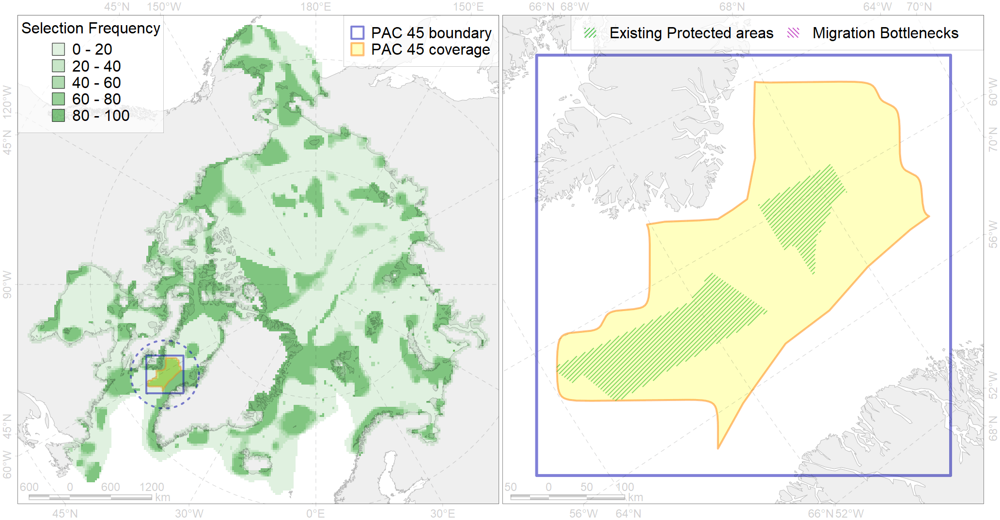

Region 45
Region 45
“ArcNet” scenario 33 achievement for region 45.
Use Accenter for advanced mode.

0
CFs inside of Region completely
7
CFs inside of Region at quarter
9
Complete-targets achievement by Region
18
Half-targets achievement by Region
| CF | Name | Target Achievement for Region | Proportion of Target Achievement in Region | Amount Proportion in Region |
|---|---|---|---|---|
| 5071 | Narwhal Admiralty Inlet stock winter core distribution | 97.2% | 96.9% | 72.6% |
| 5078 | Narwhal Eclipse Sound stock winter core distribution | 84.0% | 81.5% | 63.0% |
| 5086 | Narwhal Melville Bay stock winter core distribution | 81.7% | 76.8% | 60.8% |
| 7155 | III.4.2. Southwest Greenland slope | 336.1% | 85.6% | 53.8% |
| 7052 | cold corals of Canada and Western Greenland | 69.2% | 46.0% | 34.8% |
| 7154 | III.4.1.2. SW Greenland glacial troughs | 173.7% | 30.0% | 29.4% |
| 5115 | Narwhal wintering areas | 106.9% | 54.3% | 27.0% |
| 7259 | 7259 I I I 4 1 1 1 | 34.2% | 23.9% | 23.9% |
| 2027 | Hooded seal foraging areas | 41.8% | 36.4% | 17.1% |
| 5102 | Bottlenose whale summer feeding areas in the Northwest Atlantic | 137.4% | 45.3% | 16.6% |
| 7146 | III.2.2.1. Archipelago slope in Baffin Bay and Lancaster Sound | 273.0% | 35.7% | 15.6% |
| 2021 | Harp seal foraging areas in the Baffin Bay region | 60.2% | 28.3% | 15.4% |
| 5038 | Blue whale summer feeding areas in the Northwest Atlantic | 57.8% | 36.7% | 15.2% |
| 5042 | Bowhead whale winter concentrations in the Baffin Bay | 29.5% | 20.0% | 14.6% |
| 7153 | III.4.1.1. SW Greenland medium and low profile shelf | 100.6% | 14.3% | 12.6% |
| 2044 | Ringed seal whelping areas in the Baffin Bay region | 48.3% | 23.5% | 12.3% |
| 6034 | Ivory gull (Pagophila eburnea) Atlantic wintering grounds | 46.7% | 23.4% | 10.7% |
| 5103 | Bowhead whale Baffin population spring-autumn distribution | 41.5% | 22.7% | 10.5% |
| 9002 | polar bear of the BB (Baffin Bay) subpopulation distribution | 30.1% | 24.8% | 10.4% |
| 6041 | Ivory gull (Pagophila eburnea) postbreeding grounds in the Canadian Arctic | 43.7% | 17.0% | 9.9% |
| 5104 | Bowhead whale Baffin population winter distribution | 38.0% | 18.8% | 9.9% |
| 7142 | III.2.1.1. Baffinian shelf | 113.6% | 15.7% | 8.9% |
| 9005 | polar bear of the DS (Davis Strait) subpopulation distribution | 23.1% | 17.3% | 8.4% |
| 3034 | Marginal Ice Zone distribution in July in the Baffin Bay LME | 28.8% | 11.9% | 7.6% |
| 4056 | Distribution of the American Plaice (Hippoglossoides platessoides) (F 47), European populations | 213.4% | 13.6% | 6.8% |
| 4085 | Fish zoogeography, Arctic Region, Subarctic Transitional-Atlantic Province, Labrador – S Greenland District | 68.3% | 14.4% | 6.2% |
| 4048 | Feeding/nursery area of the ogac (Gadus ogac ) (F 41) | 43.9% | 10.9% | 5.7% |
| 3021 | Marginal Ice Zone distribution in April in the Baffin Bay LME | 40.5% | 6.2% | 5.3% |
| 5056 | Harbour porpoise summer feeding areas in West Greenland | 28.0% | 4.2% | 4.8% |
| 4032 | Range of the Arctic skate (Amblyraja hyperborea) (F2) | 119.4% | 9.2% | 3.8% |
| 5039 | Bowhead whale autumn concentrations in the Baffin Bay | 6.4% | 6.3% | 3.4% |
| 7019 | Baffinian region | 10.1% | 7.3% | 3.4% |
| 6049 | Black-legged kittiwake (Rissa tridactyla tridactyla) wintering grounds | 9.7% | 9.7% | 3.3% |
| 5112 | Arctic Cetaceans (beluga, bowhead, narwhal) winter habitats as predicterd by MIZ | 7.1% | 5.8% | 2.9% |
| 4055 | Range of the Shorthorn Sculpin (Myoxocephalus scorpius) (F 46), American populations | 91.7% | 5.2% | 2.9% |
| 4046 | Range of the Thorny Skate (Amblyraja radiata) (F 3) | 37.9% | 7.1% | 2.9% |
| 2019 | Harbour seal range in the North Atlantic region | 44.4% | 6.8% | 2.9% |
| 5041 | Bowhead whale summer concentrations in the Baffin Bay | 4.8% | 4.7% | 2.6% |
| 4059 | Range of the Greenland Halibut (Reinhardtius hippoglossoides) (F 49) | 81.3% | 6.8% | 2.6% |
| 7143 | III.2.1.2. Baffinian glacial troughs | 13.5% | 5.1% | 2.6% |
| 4045 | Feeding/migration area of the Pink Salmon (Oncorhynchus gorbuscha), native distribution (F23) | 39.1% | 6.4% | 2.5% |
| 6083 | Thick-billed murre (Uria lomvia lomvia) wintering grounds | 9.3% | 6.5% | 2.4% |
| 4028 | Feeding/migration area of the Atlantic salmon (Salmo salar) American populations (F27) | 18.3% | 5.9% | 2.3% |
| 7152 | III.4.1. Southwest Greenland shelf | 17.7% | 2.5% | 2.3% |
| 6002 | Little Auk (Alle alle alle) winetring grounds | 8.6% | 6.0% | 2.2% |
| 4017 | Feeding/ migration area of the Greenland Shark (Somniosus microcephalus) (F1) | 9.5% | 5.5% | 2.2% |
| 6023 | Atlantic puffin (Fratercula arctica naumanni) wintering grounds | 8.2% | 6.7% | 2.1% |
| 2007 | Bearded seal whelping areas in the Baffin Bay | 6.7% | 2.4% | 1.8% |
| 5050 | Fin whale summer feeding areas in the Northwest Atlantic | 4.8% | 2.5% | 1.6% |
| 4029 | Feeding area of the Arctic charr (Salvelinus alpinus), anadromous populations (F28) | 3.6% | 3.1% | 1.5% |
| 6106 | 6106 Urilomvilomvibreeding colonies | 2.4% | 1.8% | 1.2% |
| 4003 | Range of the Atlantic Capelin (Mallotus villosus) (F10) | 32.3% | 2.7% | 1.0% |
| 6099 | 6099 Rissa tridactyla tridactyla breeding colonies | 1.4% | 1.4% | 0.9% |
| 5040 | Bowhead whale spring concentrations in the Baffin Bay | 1.1% | 1.1% | 0.8% |
| 4041 | Range of the Polar Cod (Boreogadus saida) (F35) | 6.2% | 2.4% | 0.8% |
| 1002 | Atlantic Walrus Summer Distribution in Canada | 2.0% | 1.3% | 0.8% |
| 1003 | Atlantic Walrus Wintering Areas in Canada | 1.1% | 0.9% | 0.7% |
| 4079 | Fish zoogeography, Arctic Region, Arctic Abyssal Province (11A -Scandian, 11B - Central-Arctic and 11C - Baffin Deep-sea Districts ) | 13.4% | 2.3% | 0.6% |
| 4074 | Fish zoogeography, Arctic Region, High-Arctic Shelf Province, Canadian-Greenland District (10A) | 5.0% | 0.7% | 0.4% |
| 4037 | Distribution of the Glacial cod (Arctogadus glacialis) (F34) | 3.7% | 0.9% | 0.4% |
| 2064 | Bearded seal concentration areas in Greenland | 1.4% | 0.4% | 0.3% |
| 5074 | Narwhal Eeast Baffin Island stock summer distribution | 0.5% | 0.5% | 0.3% |
| 4035 | Feeding area of the Lake trout (Salvelinus namaycush) (F32) | 1.4% | 0.6% | 0.3% |
| 4053 | Range of the Fourhorn Sculpin (Myoxocephalus quadricornis) (F 45), Euro-Asian populations | 6.4% | 0.4% | 0.2% |
| 5100 | White-beaked dolphin feeding area in the Western North Atlantic | 0.8% | 0.1% | 0.1% |
| 5060 | Humpback whale summer feeding areas in the Northwest Atlantic | 0.5% | 0.2% | 0.1% |
| 6101 | 6101 Uriaalge aalge breeding colonies | 0.1% | 0.0% | 0.0% |
| 5068 | Minke whale feeding areas in the Western Atlantic | 0.2% | 0.0% | 0.0% |
| 5006 | Beluga of the Baffin Bay winter distribution | 0.0% | 0.0% | 0.0% |